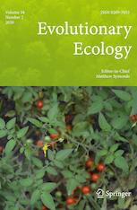

Matthew Gibson
Please see my Google Scholar page for an up-to-date list of my publications
* Equal contribution
Peer-reviewed publications
Gibson, M.J.S., Torres, M.L., Brandvain, Y., & Moyle, L.C. (2020). Reconstructing the history and biological consequences of a plant invasion on the Galapagos islands. [doi: 10.7554/eLife.64165] [BioRxiv: 2020.09.26.313627]
Moyle, L.C., Wu, M., & Gibson, M.J.S.. (2020). Reproductive proteins evolve faster than non-reproductive proteins among Solanum species. Frontiers in Plant Science 12: 635990. [doi: 10.3389/fpls.2021.635990] [BioRxiv: 2020.11.30.405183]
Hibbins, M.S., Gibson, M.J.S., & Hahn, M.W. (2020). Determining the probability of hemiplasy in the presence of incomplete lineage sorting and introgression. eLife 9: e63753. [doi: 10.7554/eLife.63753] [BioRxiv: 10.1101/2020.04.15.043752]
Gibson, M.J.S. & Moyle, L.C. (2020). Regional differences in the abiotic environment contribute to genomic divergence within a wild tomato species. Molecular Ecology 29(12): 2204-2217. [doi: 10.1111/mec.15477] [BioRxiv: 10.1101/744797]
Gibson, M.J.S.*, Crawford, D.J.*, Holder, M.T.*, Mort, M.E., Kerbs, B., Menzes de Sequeira, M., Kelly, J.K. (2020). Genome-wide genotyping estimates mating system parameters in the island species Tolpis succulenta. American Journal of Botany 107(8): 1189-1197. [doi: 10.1002/ajb2.1515
 Gibson, M.J.S. & Torres, M.L., & Moyle, L.C. (2020). Local extirpation is pervasive among populations of Galapagos endemic tomatoes. Evolutionary Ecology 34: 289-307. [doi: 10.1007/s10682-020-10035-3] [BioRxiv: 10.1101/814160] *Cover Article
Jewell, C.P., Zhang, S., Gibson, M.J.S., Tovar-Mendez, A., McClure, B., & Moyle, L.C. (2020). Intraspecific standing variation underlying reproductive barriers between species in the wild tomato clade (Solanum sect. Lycopersicon). Journal of Heredity. esaa003: 1-11. [doi: 10.1007/s10682-020-10035-3] [BioRxiv: 10.1101/718544]
Kostyun, J.L., Gibson, M.J.S., King, C.M., & Moyle, L.C. (2019). A simple genetic architecture and low constraint allows rapid floral evolution in a diverse and recently radiating plant genus. New Phytologist 223(2): 1009-1022. [doi: 10.1111/nph.15844]
Kerbs, B., Ressler, J., Kelly, J.K., Mort, M.E., Santos-Guerra, A., Gibson, M.J.S., Caujape-Castells, J., & Crawford, D.J. (2017). Variation in synthetic interspecific hybrids of Tolpis (Asteraceae) in the Canary Islands: novel character combinations, transgressive traits, and phenotypic lines. AoB Plants. 9(5): plx043. [doi: 10.1093/aobpla/plx043]